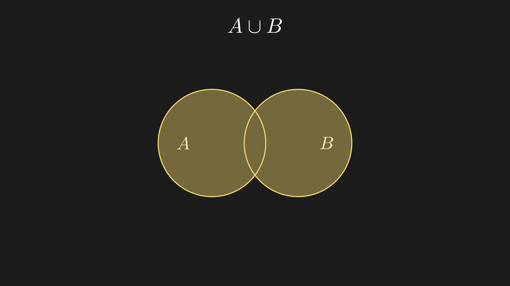
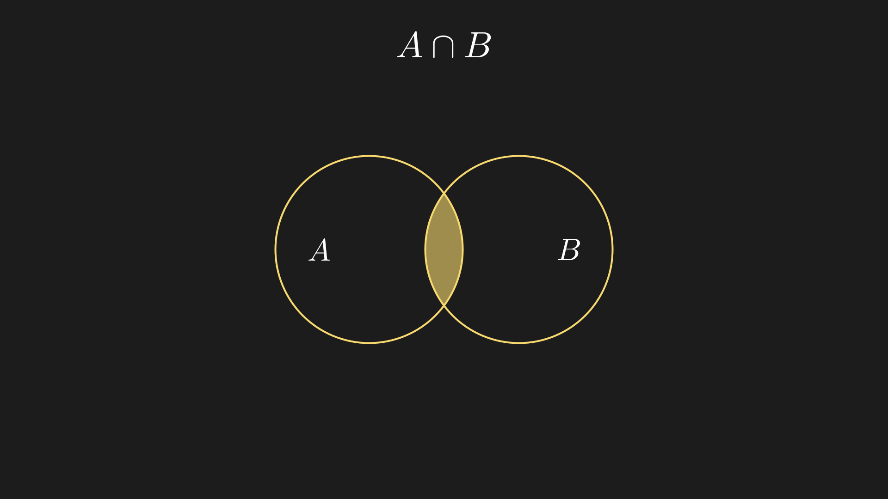
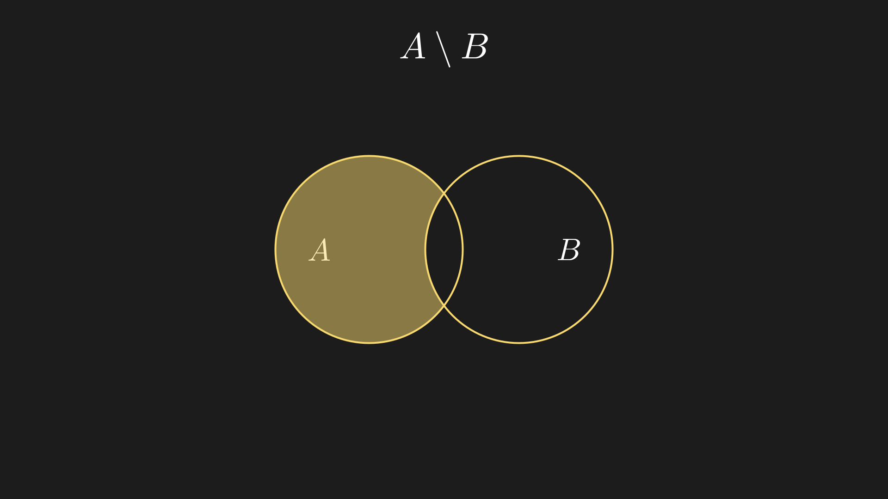
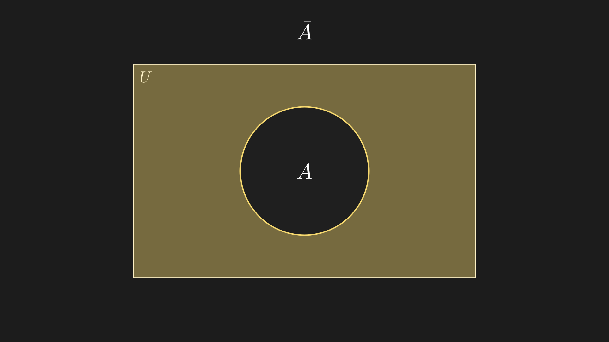
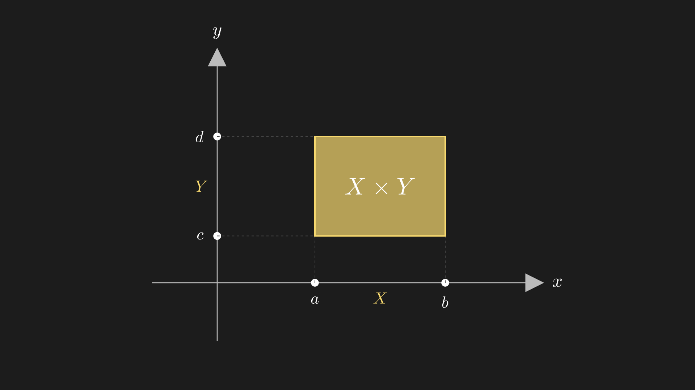

2. Операции над множествами
2.1 Объединение
Объединение (обозначается \(A \cup B\)) - это операция, которая создает новое множество из всех элементов обоих множеств
Определение
где \(\lor\) - логическое «ИЛИ» (дизъюнкция)
Графическое представление

Закрашенная область - это все элементы, которые принадлежат хотя бы одному из множеств \(A\) или \(B\)
Примеры
Пример 1: Множества с общими элементами
Важно
Элемент \(3\) встречается в обоих множествах, но в объединении он записывается только один раз!
Пример 2: Множества без общих элементов
Свойства объединения
- Коммутативность: \(A \cup B = B \cup A\)
- Ассоциативность: \((A \cup B) \cup C = A \cup (B \cup C)\)
- Идемпотентность: \(A \cup A = A\)
- Пустое множество: \(A \cup \varnothing = A\)
2.2 Пересечение
Пересечение (обозначается \(A \cap B\)) - это операция, которая создает новое множество только из общих элементов обоих множеств
Определение
где \(\land\) - логическое «И» (конъюнкция)
Графическое представление

Закрашенная область (середина) - это элементы, которые принадлежат одновременно и \(A\), и \(B\)
Примеры
Пример 1: Есть общие элементы
Пример 2: Нет общих элементов (непересекающиеся множества)
Терминология
Если \(A \cap B = \varnothing\), множества называются непересекающимися или дизъюнктными.
Свойства пересечения
- Коммутативность: \(A \cap B = B \cap A\)
- Ассоциативность: \((A \cap B) \cap C = A \cap (B \cap C)\)
- Идемпотентность: \(A \cap A = A\)
- Пустое множество: \(A \cap \varnothing = \varnothing\)
- дистрибутивность: \(A \cap (B \cup C) = (A \cap B) \cup (A \cap C)\)
2.3 Разность
Разность (обозначается \(A \setminus B\)) - это операция, которая создает новое множество из элементов \(A\), не входящих в \(B\)
Графическое представление

Закрашенная область - это элементы, которые принадлежат \(A\), но не принадлежат \(B\)
Примеры
Пример 1: Частичное пересечение
Важно
Разность не коммутативна! \(A \setminus B \neq B \setminus A\)
Пример 2: Множества без пересечения
Свойства разности
- Не коммутативна: \(A \setminus B \neq B \setminus A\) (в общем случае)
- \(A \setminus A = \varnothing\)
- \(A \setminus \varnothing = A\)
- \(\varnothing \setminus A = \varnothing\)
- \(A \setminus B = A \cap B^c\) (где \(B^c\) - дополнение \(B\))
2.4. Дополнение
Определение
где \(U\) - универсальное множество (множество, содержащее все рассматриваемые в данном контексте элементы)
Графическое представление

Закрашенная область - это все элементы универсального множества \(U\) (прямоугольник), которые не принадлежат множеству \(A\) (круг).
Примеры
Пример 1: Числовые множества
Пусть универсальное множество \(U = \{1, 2, 3, 4, 5, 6, 7, 8, 9, 10\}\)
Пример 2: Геометрический смысл
Пусть \(U\) - множество всех точек на плоскости, \(A\) - множество точек внутри окружности радиуса \(R\).
Свойства дополнения
- Двойное дополнение: \(\overline{\bar{A}} = A\)
- Дополнение универсального множества: \(\bar{U} = \varnothing\)
- Дополнение пустого множества: \(\bar{\varnothing} = U\)
- Закон исключённого третьего: \(A \cup \bar{A} = U\)
- Закон противоречия: \(A \cap \bar{A} = \varnothing\)
- Законы де Моргана:
-
\(\overline{A \cup B} = \bar{A} \cap \bar{B}\)
-
\(\overline{A \cap B} = \bar{A} \cup \bar{B}\)
Интуитивное понимание
Дополнение - это как "всё, кроме"
2.5. Декартово (прямое) произведение множеств
Декартово произведение (обозначается \(A \times B\)) - это операция, которая создает множество всех возможных упорядоченных пар \((x, y)\), где первый элемент \(x\) взят из множества \(A\), а второй элемент \(y\) - из множества \(B\)
Определение
где \((x, y)\) - упорядоченная пара, то есть \((x, y) \neq (y, x)\), если \(x \neq y\)
Графическое представление

У нас 2 множества \(X\{a,b\}\) и \(Y\{c,d\}\), их декартовое произведение будет каждой точкой этого прямоугольника: \(\{(a,c),(a,d),(b,c),(b,d)\}\)
Примеры
Пример 1: Конечные множества
Важно
Декартово произведение не коммутативно!
Пример 2: Числовые множества
Это множество точек на координатной плоскости: \((0, 0)\) и \((1, 0)\).
Пример 3: Декартов квадрат
Всего \(4 \times 4 = 16\) упорядоченных пар
Свойства декартова произведения
- Не коммутативно: \(A \times B \neq B \times A\) (в общем случае)
- Мощность: \(|A \times B| = |A| \cdot |B|\) (количество элементов)
-
Ассоциативность: Формально \((A \times B) \times C\) и \(A \times (B \times C)\) — разные множества (разная структура скобок: \(((a,b),c)\) vs \((a,(b,c))\)), но между ними есть естественное взаимно однозначное соответствие, поэтому на практике их считают одинаковыми и пишут просто \(A \times B \times C\) — множество троек \((a, b, c)\)
-
Дистрибутивность относительно объединения:
- \(A \times (B \cup C) = (A \times B) \cup (A \times C)\)
- \((A \cup B) \times C = (A \times C) \cup (B \times C)\)
- Дистрибутивность относительно пересечения:
- \(A \times (B \cap C) = (A \times B) \cap (A \times C)\)
- С пустым множеством: \(A \times \varnothing = \varnothing \times A = \varnothing\)
Практическое применение
Декартово произведение - это основа координатной геометрии. - \(\mathbb{R} \times \mathbb{R} = \mathbb{R}^2\) - плоскость (все точки с координатами \((x, y)\)) - \(\mathbb{R} \times \mathbb{R} \times \mathbb{R} = \mathbb{R}^3\) - трёхмерное пространство
📊 Сводная таблица всех операций
| Операция | Обозначение | Определение | Пример |
|---|---|---|---|
| Объединение | \(A \cup B\) | \(\{x : x \in A \lor x \in B\}\) | \(\{1,2\} \cup \{2,3\} = \{1,2,3\}\) |
| Пересечение | \(A \cap B\) | \(\{x : x \in A \land x \in B\}\) | \(\{1,2\} \cap \{2,3\} = \{2\}\) |
| Разность | \(A \setminus B\) | \(\{x : x \in A \land x \notin B\}\) | \(\{1,2\} \setminus \{2,3\} = \{1\}\) |
| Дополнение | \(\bar{A}\) | \(\{x \in U : x \notin A\}\) | \(\overline{\{1,2\}} = \{3,4,...\}\) (в \(U=\{1,2,3,4\}\)) |
| Декартово произведение | \(A \times B\) | \(\{(x,y) : x \in A, y \in B\}\) | \(\{1\} \times \{a\} = \{(1,a)\}\) |